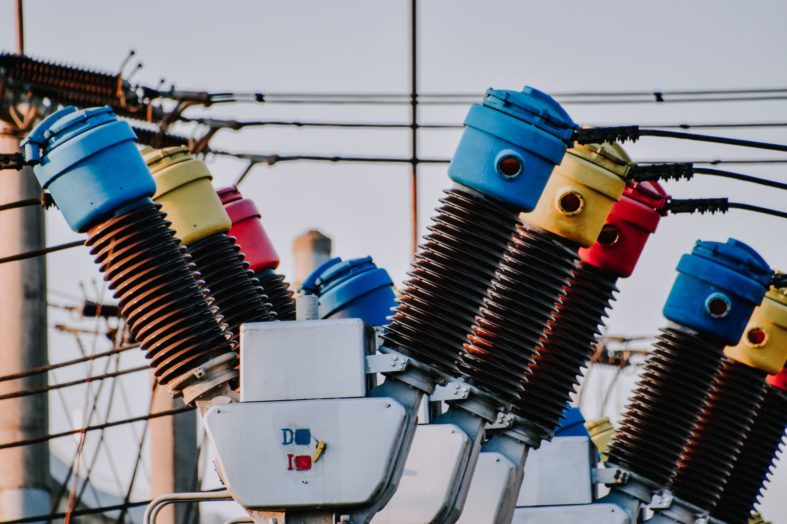

AI·반도체 전력 병목, 전력수급 재설계 시급

국내 AI 데이터센터 전력 수요는 2024년 약 2GW에서 2030년 8~10GW로 4~5배 증가가 예상된다. 삼성전자 평택 P5 팹 단독으로 최대 1.5GW, SK하이닉스 용인 클러스터는 완공 시 약 2GW를 소비할 전망이다. 반도체·AI 인프라 두 축이 동시에 전력망을 압박하는 구조다.
제10차 전력수급기본계획(2024~2038)은 AI·반도체 수요 폭발 이전에 수립된 기준을 적용한다. 이언주 의원이 국회 산자위에서 '전력수급계획 전면 재설계'를 공식 요구했고, 산업부 내부에서도 제11차 계획 조기 착수 논의가 시작됐다는 신호가 감지된다.
전력 병목은 소재·장비 병목보다 선행한다. 반도체 팹은 착공 후 3~4년이면 가동되지만, 345kV 송전선 신설은 인허가만 최소 5~7년이 걸린다. 용인 클러스터가 2027년 1단계 가동을 목표로 하더라도, 전용 송전 인프라는 2030년대 초에야 완성 가능한 일정이다.
한전의 2025년 기준 전기요금 산업용 갑(고압) 단가는 kWh당 평균 145원대다. AI 데이터센터 PUE(전력효율지수) 1.3 기준으로 연간 전력비용이 1GW급 시설 하나에 약 1.6조 원에 달한다. 전력 단가 10% 인상 시 데이터센터 운영비가 연간 1,600억 원 추가 부담되는 구조다.
소재·공급망 논의가 뜨거운 사이, 전력이 조용히 가장 먼저 막히는 병목이 되고 있다. 갈륨이나 게르마늄은 대체 루트라도 찾을 수 있지만, 전력망은 대체재 자체가 없다. 한국이 AI·반도체 메가클러스터를 동시다발로 선언하면서 전력 계획이 뒤따라가지 못하는 '선언-실행 갭'이 벌어지고 있다.
이 문제의 핵심은 시간 비대칭이다. 팹 건설 3년, 송전 인프라 7년. 지금 계획을 바꾸지 않으면 2029~2030년 팹 완공 시점에 전력이 없는 상황이 온다. 일본이 TSMC 구마모토 팹 유치 후 규슈전력과 별도 전력 협약을 3년 내 체결한 것은 이 시간 비대칭을 먼저 인식했기 때문이다.
한전KPS, LS일렉트릭, 효성중공업 등 변압기·전력기기 제조사가 직접 수혜 구간에 들어온다. 345kV 초고압 변압기 국내 수주 잔고는 2025년 기준 이미 2년치 이상이며, AI 인프라 확장이 본격화되면 추가 발주가 불가피하다. LS일렉트릭은 북미 변압기 시장에서도 수주를 확대 중이다.
ESS(에너지저장시스템) 기업도 반사이익을 본다. 데이터센터가 전력 피크를 자체 흡수하려면 대용량 ESS가 필수다. 삼성SDI와 LG에너지솔루션의 산업용 ESS 수주가 데이터센터 고객 중심으로 재편되는 흐름이 이미 감지된다.
전력 확보 계획 없이 클러스터 선언만 앞세운 지자체 사업이 가장 먼저 타격을 받는다. 전남·광주 AI 반도체 메가클러스터, 충청 반도체 특화단지 모두 전력 인프라 계획이 구체화되지 않은 상태에서 수조 원 투자를 유치하려 하고 있다.
외국계 하이퍼스케일러(AWS, 구글, 마이크로소프트)의 한국 데이터센터 신규 투자도 전력 확보 실패 시 계획이 지연될 가능성이 있다. 이미 구글은 2024~2025년 한국 데이터센터 증설 속도를 전력 협의 지연을 이유로 조정한 바 있다.
전력수급기본계획 재설계 논의에서 반도체·AI 수요를 별도 시나리오로 반영하도록 산업부에 명시적으로 요청해야 한다. 제11차 계획 착수를 2025년 내로 앞당기고, 반도체 클러스터별 전용 수전 설비 계획을 인허가 우선 처리 대상으로 지정하는 특례 입법이 필요하다.
기업 구매담당자는 데이터센터 또는 팹 확장 계획 수립 시 전력 수전 가능 시점을 계약 조건에 명시해야 한다. 전력 확보 없이 장비·소재 조달 계약을 먼저 체결하면, 납기 지연 시 위약금 리스크가 고스란히 구매처에 귀속된다.
투자자는 변압기·전력기기·ESS 밸류체인을 AI 인프라 수혜주로 재평가해야 한다. 엔비디아·TSMC 수혜 논리와 달리 전력 인프라는 수요 가시성이 3~5년 단위로 잡히고, 국산화율이 높아 환율 리스크가 낮다.
실제 조달 현장에서는 — 팹 확장 프로젝트의 소재·장비 발주가 확정된 이후에야 전력 수전 계약이 뒤따라가는 순서 역전이 반복적으로 관찰된다. 전력 계약을 소재 발주와 동시에 착수하지 않으면 납기 준수 자체가 불가능한 구조이므로, 초기 프로젝트 킥오프 단계에서 전력팀을 소재·장비팀과 같은 테이블에 앉히는 것이 선행 조건이다.
이 포스팅은 쿠팡 파트너스 활동의 일환으로 수수료를 제공받습니다.